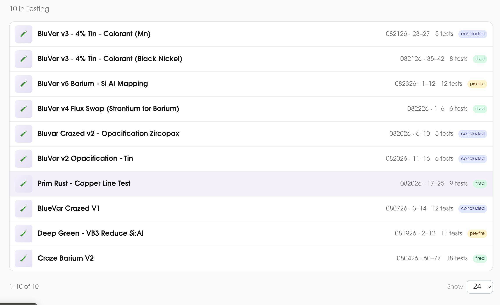

Layout
Page: Research / Tests
#1 Research tests table — improve column structure and readability
Current

Recommended Table Structure
| Test Name | Status ↕ | # of Tiles | Created ↕ | Last Updated ↕ |
|---|---|---|---|---|
| Celadon Base — Silica Line Blend | Pre-fire | 4 | Jul 14, 2026 | Aug 5, 2026 |
| Copper Red #1 — Iron Variation | Fired | 6 | Jun 28, 2026 | Jul 30, 2026 |
| Ash Glaze — Wood Ash Source Test | Concluded | 8 | May 10, 2026 | Jun 15, 2026 |
| Tenmoku — Feldspar Swap | Pre-fire | 3 | Aug 1, 2026 | Aug 3, 2026 |
- Add clear column headings. The current table lacks visible headers, making it hard to scan and understand what each column represents.
- Use these columns: Test Name, Status (Pre-fire / Fired / Concluded), # of Tiles, Created date, Last Updated date.
- Remove the numeric range columns (e.g., "23–27"). These don't communicate useful information to the user at the table level.
- Use colored status badges to make test status instantly scannable — amber for Pre-fire, green for Fired, gray for Concluded.